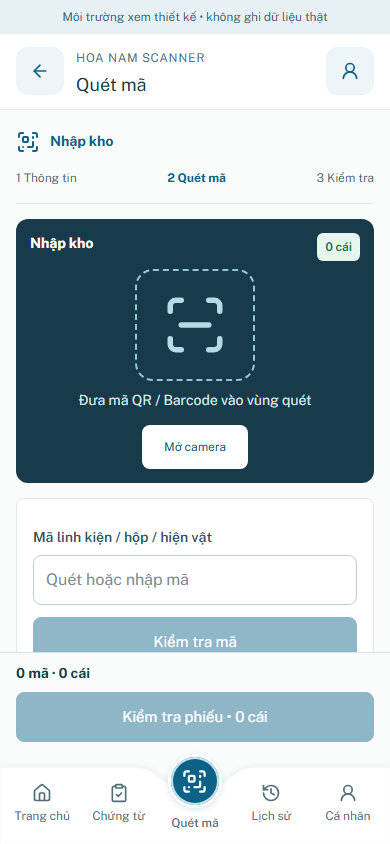
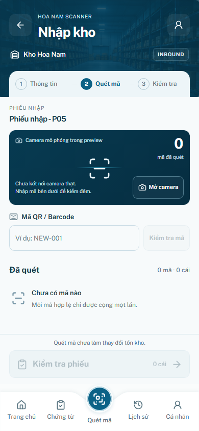
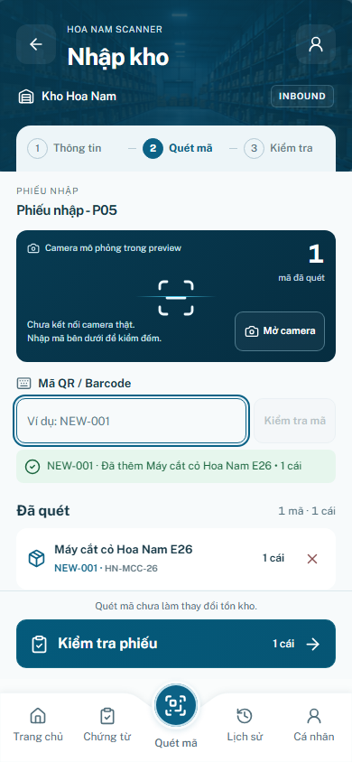
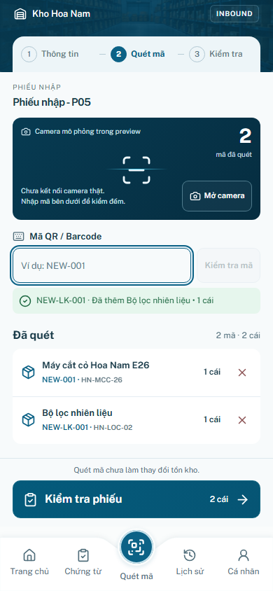
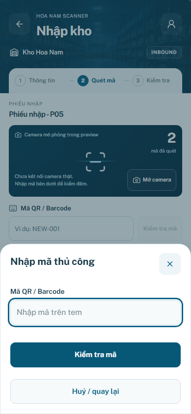
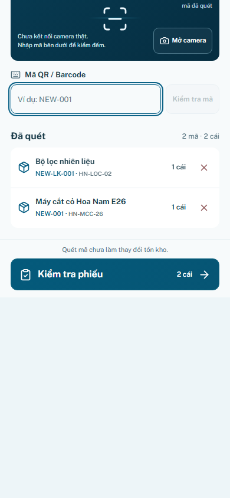
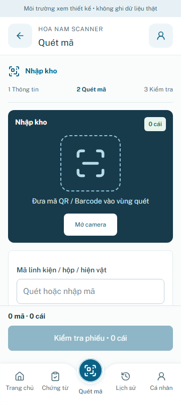
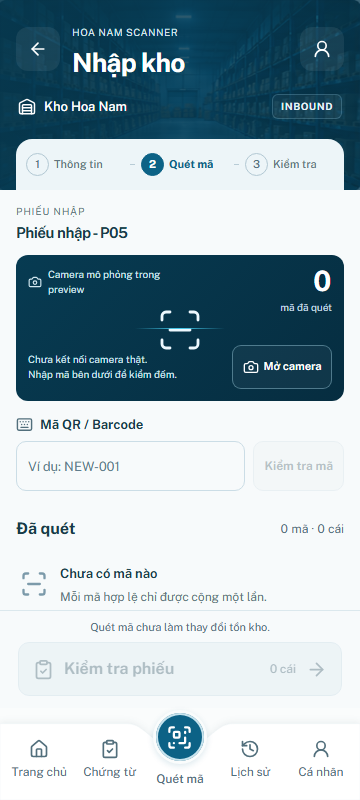
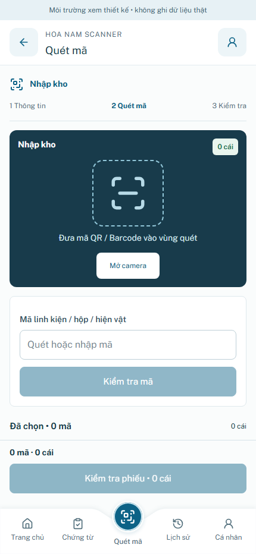
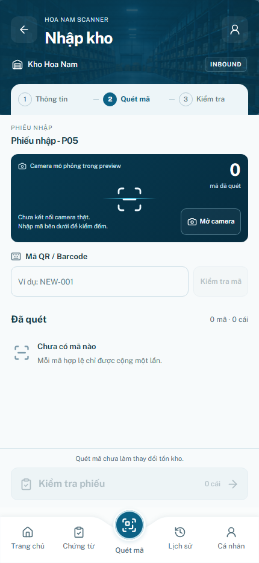

P05 — INBOUND Scanner
Mở app → Nhập kho → Tiếp tục quét mã · Report · QA
Before / After / P04 baseline —390×844
BEFORE
AFTER
P04 đã duyệt
Feedback theo nghiệp vụ
Thêm mã hợp lệ
Mã trùng — không cộngSai trạng thái nhập Không tìm thấy / mã pending
Danh sách gọn / Manual / Keyboard proxy
Danh sách quét
Nhập mã thủ công
Keyboard proxy
360×800 /430×932
Before 360
After 360
Before 430
After 430
Regression P01–P04
| Width | Screen | Changed pixels | Max colorΔ/255 | Result |
|---|
| 360 | login | 0 | 0 | PASS |
| 360 | shift | 0 | 0 | PASS |
| 360 | home | 0 | 0 | PASS |
| 360 | p04 | 0 | 0 | PASS |
| 390 | login | 0 | 0 | PASS |
| 390 | shift | 0 | 0 | PASS |
| 390 | home | 0 | 0 | PASS |
| 390 | p04 | 0 | 0 | PASS |
| 430 | login | 0 | 0 | PASS |
| 430 | shift | 0 | 0 | PASS |
| 430 | home | 0 | 0 | PASS |
| 430 | p04 | 0 | 0 | PASS |
Raw regression · Source freeze